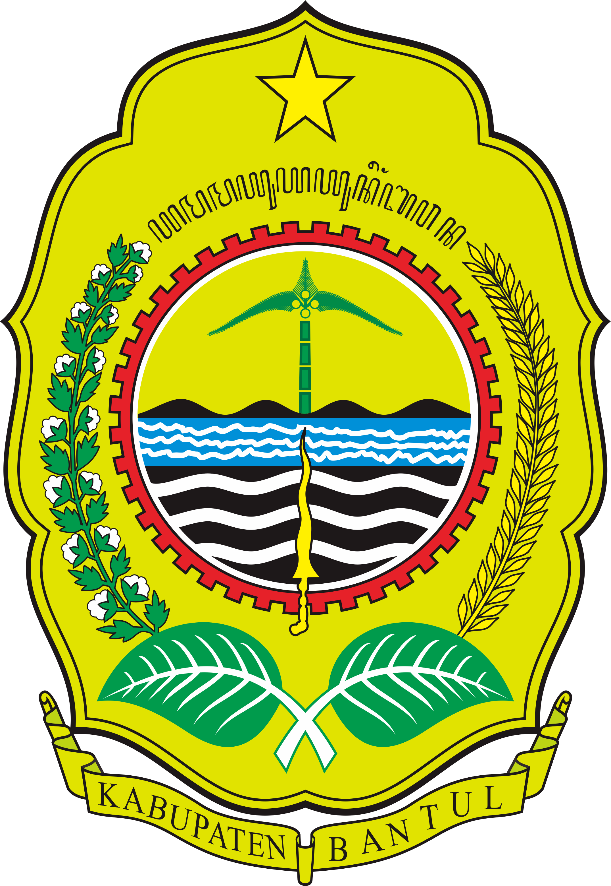

Profil Desa
Desa Segoroyoso merupakan suatu daerah yang sangat aktif dalam melakukan inventarisasi data geospasial wilayahnya. Departemen Teknik Geodesi, Universitas Gadjah Mada telah melaksanakan beberapa kegiatan PPM di desa Segoroyoso. Kegiatan PPM yang telah dilakukan, pastinya memiliki beberapa kekurangan yang harus dievaluasi dan diperbaharui. Salah satunya adalah pembuatan peta tanah kas desa dan basisdata keluarga yang telah dilaksanakan melalui kegiatan PPM tahun 2021 masih belum tersaji dengan baik sebab hanya berupa peta statik yang disajikan di atas kertas. Selain itu, dilihat dari website resmi desa Segoroyoso, sistem Informasi desa yang telah ada belum mengutamakan aspek spasial.
Pembuatan sistem ini diharapkan dapat membantu Pemerintah Kalurahan dalam mengelola data dan memberikan gambaran mengenai pemetaan wilayah kalurahan dalam bentuk website sehingga informasi (data) akan lebih mudah dan cepat diakses oleh pengunjung dengan tampilan pemetaan lebih menarik dan interaktif. Penyajian informasi geografis melalui internet mempunyai target yang lebih luas sehingga penggunaan webGIS dapat memudahkan pengguna untuk menganalisis dan menampilkan suatu informasi geografis karena dapat diakses di mana saja, kapan saja, dan oleh siapa saja.
Cara Mengoperasikan Peta
1. Untuk memperbesar dan memperkecil: Klik tombol zoom (+ dan -) di pojok kiri atas peta.
2. Untuk berpindah ke atas atau bawah, kiri atau kanan: Klik dan tahan mouse atau trackpad, lalu seret peta.
3. Untuk melihat objek apa saja yang ditampilkan pada peta: Klik tombol Legenda di pojok kanan atas. Pada menu Legenda, pengguna juga dapat memilih objek apa saja yang ingin ditampilkan pada peta. Caranya adalah dengan mengklik pada daftar layer yang terdapat di legenda, lalu centang objek yang ingin dilihat atau ditampilkan.
4. Untuk menuju suatu lokasi yang pada objek yang dipilih dari lokasi pengguna: Klik tombol search.
5. Untuk mengetahui posisi pengguna : Klik tombol locate yang terletak di bawah tombol zoom. Tombol ini dapat bekerja dengan baik apabila pengguna mengaktifkan layanan GPS yang terdapat pada perangkat yang digunakan.
6. Untuk memperoleh informasi serta memunculkan tabel pop up yang lebih detail mengenai setiap fitur yang disajikan di peta Desa Segoroyoso: Klik pada fitur yang akan ditampilkan.
Peta Kalurahan Segoroyoso
Peta Desa Segoroyoso memuat peta kependudukan disertai dengan data keluarga (hasil dari kegiatan PPM tahun 2021); peta persebaran bidang tanah yang terdiri dari tanah kas desa, tanah plungguh, tanah pangarem-arem, dan tanah kepentingan umum (hasil dari kegiatan PPM tahun 2018 dan tahun 2021) ; peta persebaran jenis lahan yang meliputi sawah, tanah kering, dan tanah hutan yang diperoleh dengan cara digitasi on screen terhadap data foto udara desa segoroyoso
Hubungi Kami
Kalurahan Segoroyoso
Segoroyoso I, Segoroyoso, Kapanewon Pleret, Kabupaten Bantul, Daerah Istimewa Yogyakarta.
desa.segoroyoso@bantulkab.go.id
(0274) 441151

Departemen Teknik Geodesi
Fakultas Teknik Universitas Gadjah Mada
Jl. Grafika no.2 Bulaksumur, Yogyakarta, 55281
geodesi@ugm.ac.id
(0274) 520226